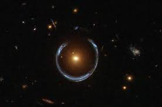

La materia oscura es un tipo de materia que no emite ni absorbe radiacion electromagnetica detectable, pero cuya existencia se infiere a partir de efectos gravitacionales observables.
Entre los candidatos propuestos se encuentran las particulas WIMP y los axiones.
